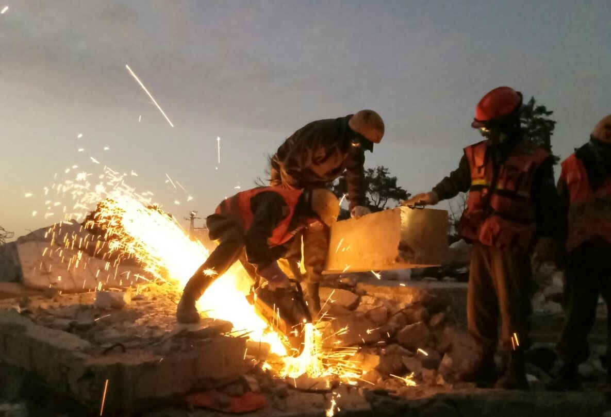

טוען...
ציר זמן- מפלח''ץ לחטיבת החילוץ וההדרכה
1992- הקמת פיקוד העורף
2003- הקמת פלוגת החילוץ הראשונה- פלוגת 'שביט'
2004- הקמת פלוגת 'חץ' ופלוגת 'רותם'
2008- איחוד פלוגות החילוץ והקמת גדוד שחר
2009- הקמת גדוד קדם
2011- המעבר ממג''ל לפקע''ר
2012- הקמת גדוד תבור
2012- הקמת גדוד רם
2013- הקמת הנפה הסדירה
1952- בה"ד 16
2016- איחוד בה"ד 16 והנפה הסדירה
ייעוד ותפקידים
ייעוד החטיבה
תפקידי החטיבה בשגרה ובחירום
תפקידים מרכזיים- מפקדה משימתית- טורקיה
תפקידים מרכזיים- מפקדה משימתית- קורונה
תפקידים מרכזיים- חילוץ בעורף
תפקידים מרכזיים- חילוץ בסיוע לתמרון
תפקידים מרכזיים- אב''כ
תפקידים מרכזיים- בט''ש
מבנה החטיבה
מפקדת חטיבת החילוץ וההדרכה
בא''ח העורף
ביה''ס לפיקוד ומקצועות העורף
בא''פ העורף
יחידת מתכים
גדודי החטיבה
אודות:
מפקדת גפ''ה:
רס''ן שירה קרצ'ין
ק. ניהול ידע:
סגן אורי ספרנוביץ
פיתוח:
סמל תמר שנהב
גרפיקות:
רב"ט שקד שואן
מומחה תוכן:
אל''ם אלעד אדרי
גרסה:
אוק' 2024
צור קשר:
gapa.rescue@gmail.com
תפקידי החטיבה בשגרה
להכשיר את מקצועות העורף בסדיר ובמילואים ואת מערך הלחימה בפקע''ר.
תפקידי החטיבה בשגרה
לאמן ולשמר כשירות למסגרות המילואים בפיקוד בהתאם
למחזוריות האימונים.
תפקידי החטיבה בשגרה
לשמש כח כוננות מיידי לאירועי חילוץ, הצלה ואב''כ.
תפקידי החטיבה בשגרה
לשמש בניין הכוח של גדודי החילוץ וההצלה הסדירים, בא''ח, ביה''ס לפיקוד ולמקצועות העורף ובסיס אימון יחידות פיקודי.
תפקידי החטיבה בשגרה
לפתח ידע מקצועי בעולמות החילוץ והאב''כ.
תפקידי החטיבה בשגרה
לשלח גדודים לתע''מ עפ''י גרף אמ''צ ולאמן את המסגרות תוך כדי תע''מ.
תפקידי החטיבה בשגרה
שמירת
כשירות וכוננות
למפקדת החטיבה ויחידותיה.
תפקידי החטיבה בחירום
לשמש
מפקדה משימתית קידמית
במרחב העורף לסיוע במצבי החירום השונים בהתאם למחויבות אופרטיבית ומוכנות לקבל אחריות גזרתית בעורף.
תפקידי החטיבה בחירום
פו''ש על אירועי חילוץ, הצלה, בלתי קונבנציונליים ופינוי אוכלוסיה.
תפקידי החטיבה בחירום
לתגבר את
מרכז המידע הפיקודי
וביצוע משימות סיוע אזרחי.
תפקידי החטיבה בחירום
לפקד/לשלח את גדודי החטיבה ת''פ מחוז אחר בהתאם לניתוח האיום ועפ''י הע''מ.
תפקידי החטיבה בחירום
לבצע אימונים והכשרות במסגרת תכנית
'זמן יקר'.

Previous
Next
לחצו על כל הסמלים על מנת לגלות את שינוי שמות הפלוגות ולהמשיך בלומדה
המשך